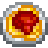
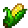
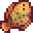
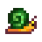

|
 |
Ovo Frito |
 Ovo (1) Ovo (1) |
Recompensa de atualização da Casa da Fazenda |
|
 |
Omelete |
Ovo (1)
 Leite (1) Leite (1) |
Programa "Rainha do Molho", 28 da Primavera, Ano 1 |
|
 |
Salada |
 Alho-poró (1) Alho-poró (1)
 Dente-de-Leão (1) Dente-de-Leão (1)
 Vinagre (1) Vinagre (1) |
Mais de 3 corações com a Emily |
|
 |
Couve-flor com Queijo |
 Couve-flor (1) Couve-flor (1)
 Queijo (1) Queijo (1)
|
Mais de 3 corações com a Pam |
|
 |
Peixe Assado |
 Peixe-sol (1) Peixe-sol (1)
 Brema (1) Brema (1)
 Farinha de Trigo (1) Farinha de Trigo (1) |
Programa "Rainha do Molho", 7 do Verão, Ano 1 |
|
 |
Sopa de Chirívia |
 Chirívia (1) Chirívia (1)
Leite (1)
Vinagre (1) |
Mais de 3 corações com a Caroline |
|
 |
Mexido de Legumes |
 Tomate (1) *verão* Tomate (1) *verão*
 Beterraba (1) *outono* Beterraba (1) *outono* |
Mais de 7 corações com a Caroline |
|
 |
Café da Manhã Completo |
Ovo Frito (1)
Leite (1)
 Batata-palha (1) Batata-palha (1)
 Panquecas (1) Panquecas (1) |
Programa "Rainha do Molho", 21 da Primavera, Ano 2 |
|
 |
Lula Frita |
 Lula (1) Lula (1)
Farinha de Trigo (1)
 Óleo (1) Óleo (1) |
Mais de 3 corações com a Jodi |
|
 |
Pão Estranho |
Farinha de Trigo (1)
 Caramujo (1) Caramujo (1)
 Maionese Nula (1) Maionese Nula (1) |
Mais de 7 corações com o Shane |
|
 |
Almoço da Sorte |
 Pepino-do-mar (1) *outono, inverno* Pepino-do-mar (1) *outono, inverno*
 Tortilha (1) *verão, outono* Tortilha (1) *verão, outono*
 Jasmim-azul (1) *primavera* Jasmim-azul (1) *primavera* |
Programa "Rainha do Molho", 28 da Primavera, Ano 2 |
|
 |
Cogumelo Frito |
 Cogumelo Comum (1) Cogumelo Comum (1)
 Morel (1) Morel (1)
Óleo (1) |
Mais de 3 corações com o Demetrius |
|
 |
Pizza |
Farinha de Trigo (1)
Tomate (1)
Queijo (1) |
Programa "Rainha do Molho", 7 da Primavera, Ano 2 |
|
 |
Sopa de Vagens |
 Vagem (2) Vagem (2) |
Mais de 7 corações com o Clint |
|
 |
Inhames com Cobertura |
 Inhame (1) Inhame (1)
 Açucar (1) Açucar (1) |
Programa "Rainha do Molho", 21 do Outono, Ano 1 |
|
 |
Carpa-surpresa |
 Carpa (4) Carpa (4) |
Programa "Rainha do Molho", 7 do Verão, Ano 2 |
|
|
Batata-palha |
 Batata (1) Batata (1)
Óleo (1) |
Programa "Rainha do Molho", 14 da Primavera, Ano 2 |
|
|
Panquecas |
Farinha de Trigo (1)
Ovo (1) |
Programa "Rainha do Molho", 14 do Verão, Ano 1 |
|
 |
Jantar de Salmão |
Salmão (1) *outono*
 Amaranto (1) *outono* Amaranto (1) *outono*
 Couve (1) *primavera* Couve (1) *primavera* |
Mais de 3 corações com o Gus |
|
 |
Taco de Peixe |
 Atum (1) Atum (1)
Tortilha (1)
 Repolho roxo (1) Repolho roxo (1)
 Maionese (1) Maionese (1) |
Mais de 7 corações com o Linus |
|
 |
Achigã Crocante |
 Achigã (1) Achigã (1)
Farinha de Trigo (1)
Óleo (1) |
Mais de 3 corações com o Kent |
|
 |
Enroladinhos de Pimenta |
 Pimenta (1) Pimenta (1)
Queijo (1) |
Mais de 3 corações com o Shane |
|
|
Pão |
Farinha de Trigo (1) |
Programa "Rainha do Molho", 28 do Verão, Ano 1 |
|
 |
Sopa Tom Kha |
 Coco (1) Coco (1)
 Camarão (1) Camarão (1)
Cogumelo Comum (1) |
Mais de 7 corações com a Sandy |
|
 |
Sopa de Truta |
 Truta Arco-íris (1) Truta Arco-íris (1)
 Algas Verdes (1) Algas Verdes (1) |
Programa "Rainha do Molho", 14 do Outono, Ano 1 |
|
 |
Bolo de Chocolate |
Farinha de Trigo (1)
Açúcar (1)
Ovo (1) |
Programa "Rainha do Molho", 14 do Inverno, Ano 1 |
|
 |
Bolo Rosa |
 Melão (1) Melão (1)
Farinha de Trigo (1)
Açúcar (1)
Ovo (1) |
Programa "Rainha do Molho", 21 do Verão, Ano 2 |
|
 |
Torta de Ruibarbo |
 Ruibarbo (1) Ruibarbo (1)
Farinha de Trigo (1)
Açúcar (1) |
Mais de 7 corações com a Marnie |
|
 |
Biscoito |
Farinha de Trigo (1)
Açúcar (1)
Ovo (1) |
Mais de 4 corações com a Evelyn (Vovó) |
|
 |
Espaguete |
Farinha de Trigo (1)
Tomate (1) |
Mais de 3 corações com o Lewis |
|
 |
Enguia Frita |
 Enguia (1) Enguia (1)
Óleo (1) |
Mais de 3 corações com o George |
|
 |
Enguia Picante |
Enguia (1) *primavera, outono*
Pimenta (1) *verão* |
Mais de 7 corações com o George |
|
 |
Sashimi |
Qualquer peixe (1) |
Mais de 3 corações com o Linus |
|
 |
Rolinhos de Arroz |
Qualquer peixe (1)
 Algas Marinhas (1) Algas Marinhas (1)
 Arroz (1) Arroz (1) |
Programa "Rainha do Molho", 21 do Verão, Ano 1 |
|
|
Tortilha |
 Milho (1) |
Programa "Rainha do Molho", 7 do Outono, Ano 1 |
|
 |
Prato Vermelho |
Repolho Roxo (1)
 Rabanete (1) Rabanete (1) |
Mais de 7 corações com a Emily |
|
 |
Parmesão com Beringela |
 Beringela (1) *outono* Beringela (1) *outono*
Tomate (1) *verão* |
Mais de 7 corações com o Lewis |
|
 |
Pudim de Arroz |
Leite (1)
Açucar (1)
Arroz (1) |
Mais de 7 corações com a Evelyn (Vovó) |
|
 |
Sorvete |
Leite (1)
Açucar (1) |
Mais de 7 corações com a Jodi |
|
 |
Torta de Mirtilo |
 Mirtilo (1) Mirtilo (1)
Farinha de Trigo (1)
Açucar (1)
Ovo (1) |
Mais de 3 corações com o Pierre |
|
 |
Prato de Outono |
Inhame (1)
 Abobora (1) Abobora (1) |
Mais de 7 corações com o Demetrius |
|
 |
Sopa de Abóbora |
Abobora (1)
Leite (1) |
Mais de 7 corações com a Robin |
|
 |
Superprato |
 Couve chinesa (1) Couve chinesa (1)
 Oxicoco (1) Oxicoco (1)
 Alcachofra (1) Alcachofra (1) |
Mais de 7 corações com o Kent |
|
 |
Molho de Oxicoco |
Oxicoco (1)
Açúcar (1) |
Mais de 7 corações com o Gus |
|
 |
Recheio |
Pão (1)
Oxicoco (1)
 Avelã (1) Avelã (1) |
Mais de 7 corações com a Pam |
|
 |
Almoço de Fazendeiro |
Omelete (1)
Chirivia (1) |
Habilidade Cultino Nível 3 |
|
 |
Prato do Mar |
 Sardinha (2) Sardinha (2)
Batata-palha (1) |
Habilidade Pesca Nível 3 |
|
|
Refeição de Mineiro |
 Cenoura Subterrâna (2) Cenoura Subterrâna (2)
Açúcar (1) Leite (1) |
Habilidade Mineração Nível 3 |
|
 |
Prato de Raízes |
Cenoura Subterrâna (1)
 Raiz de Inverno (1) Raiz de Inverno (1) |
Habilidade Combate Nível 3 |
|
 |
Café Expresso Triplo |
 Café (3) Café (3) |
Saloon Fruta Estrelar por 5 000 ouros |
|
 |
Pudim de Espuma do Mar |
 Linguado (1) *primavera, verão*
 Carpa da Meia-noite (1) *outono, inverno* Carpa da Meia-noite (1) *outono, inverno*
 Tinta de Lula (1) Tinta de Lula (1)
|
Habilidade Pesca Nível 9 |
|
 |
Sopa de Alga |
Alga Verde (4) |
Mais de 3 corações com o Clint |
|
 |
Caldo Pálido |
 Algas Brancas (2) Algas Brancas (2) |
Mais de 3 corações com a Marnie |
|
 |
Pudim de Ameixa |
 Ameixa Selvagem (2) Ameixa Selvagem (2)
Farinha de Trigo (1)
Açúcar (1) |
Programa "Rainha do Molho", 7 do Inverno, Ano 1 |
|
 |
Molho de Alcachofra |
Alcachofra (1)
Leite (1) |
Programa "Rainha do Molho", 28 do Outono, Ano 1 |
|
 |
Refogado |
Cenoura Subterrânea (1)
Cogumelo Comum (1)
Couve (1)
Óleo (1) |
Programa "Rainha do Molho", 7 da Primavera, Ano 1 |
|
 |
Avelãs Torradas |
Avelã (3) |
Programa "Rainha do Molho", 28 do Verão, Ano 2 |
|
 |
Torta de Abóbora |
Abóbora (1)
Farinha de Trigo (1)
Leite (1)
Açúcar (1) |
Programa "Rainha do Molho", 21 do Inverno, Ano 1 |
|
 |
Salada de Rabanete |
Óleo (1)
Vinagre (1)
Rabante (1) |
Programa "Rainha do Molho", 21 da Primavera, Ano 1 |
|
 |
Salada de Frutas |
Mirtilo (1) *verão*
Melão (1) *verão*
 Damasco (1) *primavera* Damasco (1) *primavera* |
Programa "Rainha do Molho", 7 do Outono, Ano 2 |
|
 |
Torta de Amoras |
 Amora (2) Amora (2)
Açúcar (1)
Farinha de Trigo (1) |
Programa "Rainha do Molho", 14 do Outono, Ano 2 |
|
 |
Doce de Oxicoco |
Oxicoco (1)
 Maça (1) Maça (1)
Açucar (1) |
Programa "Rainha do Molho", 28 do Inverno, Ano 1 |
|
 |
Brusqueta |
Pão (1)
Óleo (1)
Tomate (1) |
Programa "Rainha do Molho", 21 do Inverno, Ano 2 |
|
 |
Salada de Repolho |
Repolho roxo (1)
Vinagre (1)
Maionese (1) |
Programa "Rainha do Molho", 14 da Primavera, Ano 1 |
|
 |
Risoto de Samambaia |
Óleo (1)
 Broto de Samambaia (1) *verão* Broto de Samambaia (1) *verão*
 Alho (1) *primavera* Alho (1) *primavera* |
Programa "Rainha do Molho", 28 do Outono, Ano 2 |
|
 |
Bolinho de Papoula |
 Papoula (1) Papoula (1)
Farinha de Trigo (1)
Açúcar (1) |
Programa "Rainha do Molho", 7 do Inverno, Ano 2 |
|
 |
Sopa de Peixe |
 Concha (1) Concha (1)
Leite (1) |
Mais de 3 corações com o Willy |
|
 |
Guisado de Peixe |
 Lagostim (1) Lagostim (1)
 Mexilhão (1) Mexilhão (1)
Caramujo (1)
Tomate (1) |
Mais de 7 corações com o Willy |
|
 |
Escargô |
 Lesma (1)
Alho (1) |
Mais de 5 corações com o Willy |
|
 |
Bisque de Lagosta |
 Lagosta (1) Lagosta (1)
Leite (1) |
Mais de 9 corações com o Willy ou Programa "Rainha do Molho", 14 do Inverno, Ano 2 |
|
 |
Pão de Ácer |
 Xarope de Ácer (1) Xarope de Ácer (1)
Açúcar (1)
Farinha de Trigo (1) |
Programa "Rainha do Molho", 14 do Verão, Ano 2 |
|
 |
Bolinhos de Caranquejo |
 Caranguejo (1) Caranguejo (1)
Farinha de Trigo (1)
Ovo (1)
Óleo (1) |
Programa "Rainha do Molho", 21 do Outono, Ano 2 |
|
 |
Coquetel de Camarão |
Tomate (1) *verão*
Camarão (1)
 Raiz-forte (1) *primavera* Raiz-forte (1) *primavera* |
Programa "Rainha do Molho", 28 do Inverno, Ano 2 |
|
 |
Ginger Ale |
 Gengibre (3) Gengibre (3)
Açúcar (1) |
Loja Caverna do Vulcão por 1 000 ouros |
|
 |
Pudim de Banana |
 Banana (1) Banana (1)
Leite (1)
Açúcar (1) |
Comerciante da Ilha por 30 Fragmentos de Ossos |
|
 |
Arroz Doce de Manga |
 Manga (1) Manga (1)
Coco (1)
Arroz (1) |
Mais de 7 corações com o Leo |
|
 |
Poi |
 Inhame-coco (4) Inhame-coco (4) |
Mais de 3 corações com o Leo |
|
 |
Curry Tropical |
Coco (1)
 Abacaxi (1) Abacaxi (1)
Pimenta (1) |
Resort da Praia por 2 000 ouros |
|
 |
Ravioli de Tinta de Lula |
Tinta de Lula (1)
Farinha de Trigo (1)
Tomate (1) |
Habilidade Combate Nível 9 |
|
 |
Sopa de Musgo |
 Musgo (20) Musgo (20) |
Habilidade Coleta Nível 3 |